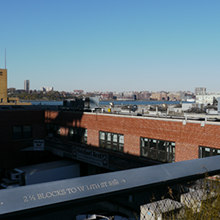

Just a tourist in NYC
Just a tourist in NYC
Travel Tips
Tip Two
There are things you need to pay attention before you go!
- Be aware of any travel alerts and weather warnings for your destination
- Bring all the required travel documents
- Bring some ibuprofen just in case you have headache
- Don't pack everything from your house, but don't forget to pack things you will need
Tip Three
Changes will always defeat planning. Thus, plan simply but be prepare to change according to the weather, locations prediction mistakes, traffic condition, or other emergency happens, or your just sleep late that day.Tip Four
Explore a new city or new place by yourself is never that scary. Actually it's lots of fun because you don't need to go to places only your friends want to go but you don't. Also you could manage your schedule better without having conflict with other partner's change or they are just slow to leave one place like the shopping mall.
"Must Go" List
- Metropolitan Museum of Art
- Brooklyn Bridge
- High line
- MoMA
- Guggenheim Museum
- Museum of Natural Hisotry
- Central Park
Like US in social media!
Day 1:
Statue of Liberty

"The Statue of Liberty Enlightening the World" was a gift of friendship from the people of France to the United States and is recognized as a universal symbol of freedom and democracy. The Statue of Liberty was dedicated on October 28, 1886.
Day 2:
High Line

The High Line is a public park built on a historic freight rail line elevated above the streets on Manhattan’s West Side. It runs from Gansevoort Street in the Meatpacking District to West 34th Street, between 10th and 12th Avenues.
Day 3:
Art Museums

There are many famous art museums in NYC such as The Metropolitan Museum of Art, Museum of Modern Art, and Guggenheim Museum. They are all individually different. Each has lots of styles of beautiful arts and paintings.
Day 4:
Brooklyn Bridge

The Brooklyn Bridge lays over NYC’s East River, linking Manhattan and Brooklyn. Since 1883, its granite towers and steel cables have offered a safe and scenic passage to millions of commuters and tourists, trains, bicycles, and cars.